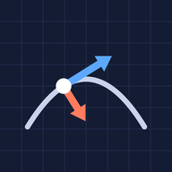

Installe l’appli de révision
Toute la mécanique du S1 dans ta poche : le cours en fiches courtes, @@NB_QCM@@ questions de QCM, @@NB_EXOS@@ exercices de TD guidés et des cartes mémoire.
Sur Android
Si le bouton n’apparaît pas, fais-le à la main :
- Ouvre cette page dans Chrome.
- Touche le menu ⋮ en haut à droite.
- Choisis « Installer l’application » ou « Ajouter à l’écran d’accueil ».
- Confirme. L’icône apparaît avec tes autres applis.
Avec Samsung Internet : menu ≡, puis « Ajouter la page à », puis « Écran d’accueil ».
Sur iPhone ou iPad
- Ouvre cette page dans Safari.
- Touche le bouton Partager en bas de l’écran (en haut sur iPad).
- Fais défiler et touche « Sur l’écran d’accueil » .
- Touche « Ajouter » en haut à droite. L’icône apparaît sur ton écran d’accueil.
Depuis iOS 16.4, ça marche aussi depuis Chrome : bouton Partager à droite de la barre d’adresse, puis « Sur l’écran d’accueil ».
Sur ordinateur
Le plus simple : scanne le QR code ci-dessous avec ton téléphone, puis suis les étapes Android ou iPhone.
Avec Chrome ou Edge, tu peux aussi l’installer sur l’ordinateur : icône d’installation à droite de la barre d’adresse.
Questions fréquentes
C’est vraiment gratuit ?
Oui. Pas de pub, pas de compte, rien à payer.
Pourquoi elle n’est pas sur l’App Store ou le Play Store ?
Publier y coûte 99 $ par an chez Apple et 25 $ chez Google. Une appli web installable fait la même chose gratuitement : icône sur l’écran d’accueil, plein écran, hors ligne.
Ça marche sans internet ?
Oui. Après la première ouverture, tout le cours est enregistré sur ton appareil.
Comment je reçois les nouveaux cours et QCM ?
Tout seul. Quand une nouvelle version sort, un bandeau « Nouvelle version disponible » apparaît dans l’appli : touche « Mettre à jour ».
Les autres voient mes réponses ?
Non. Tes réponses et ta progression restent sur ton appareil.
Comment la supprimer ?
Comme une appli normale : appui long sur l’icône, puis « Supprimer » ou « Désinstaller ».
Version du @@VERSION@@. Contenu tiré du cours et des TD de mécanique S1, et des annales publiques Epidocs. Appli d’étudiants, non officielle. Ouvrir l’appli